Welcome
This is my placeholder site til I get something more exciting going. You can email me at dantescanline (at) posteo dot net
About
I like to make music, 3d, games, websites, zines, comics, videos, plants. I made weird art games with the people in AAA Software for several years. I like to make quake 1 single-player maps as part of the very active mapping community. I'm very interested in lofi 'retro' 3d
Personal Values
I strongly value open source and am a copyright abolitionist. I think software should serve people and not the other way around. I am an anarchist 🏴, particularly a mutualist or lwma. I am old.
Placeholder Junk
Here's some pretty pictures until I make a proper site
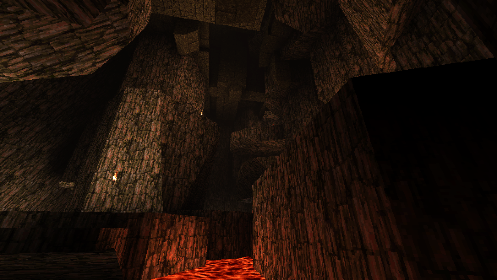
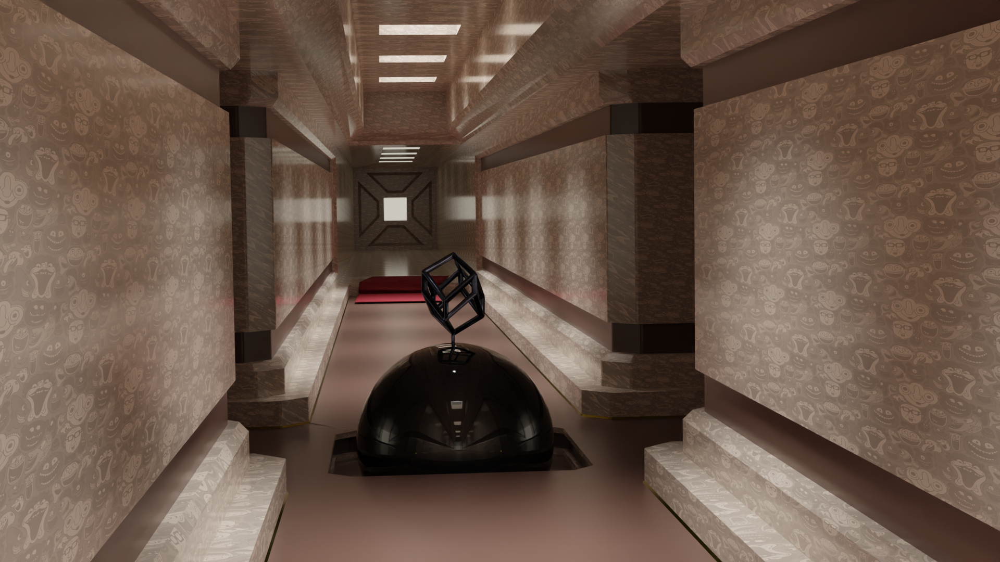
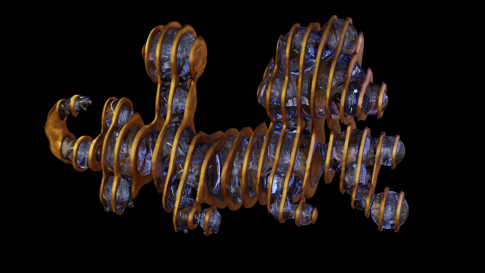
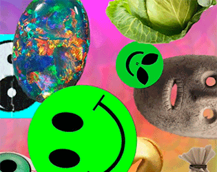
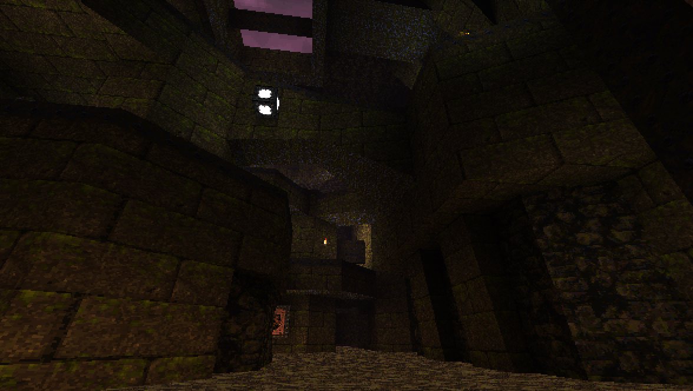
 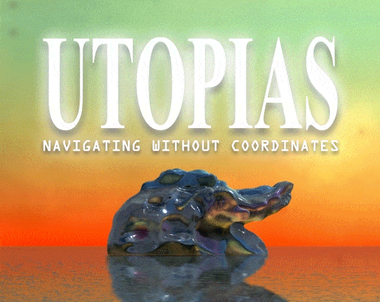
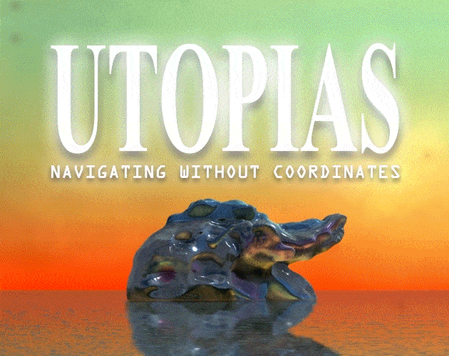
 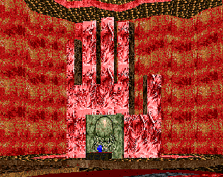
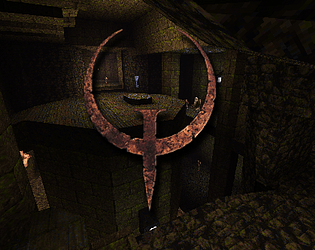
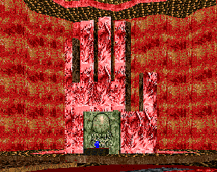
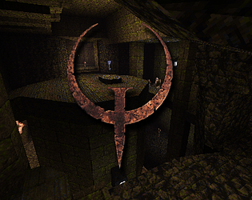
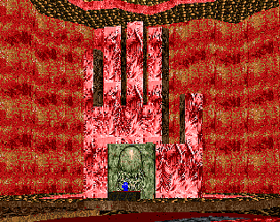
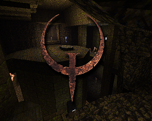